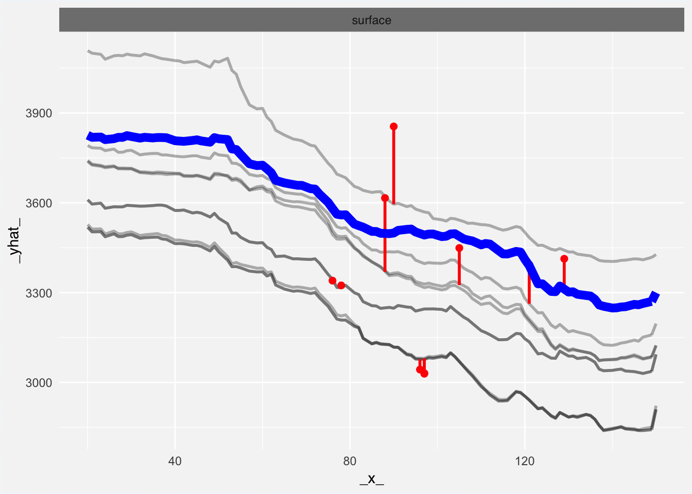
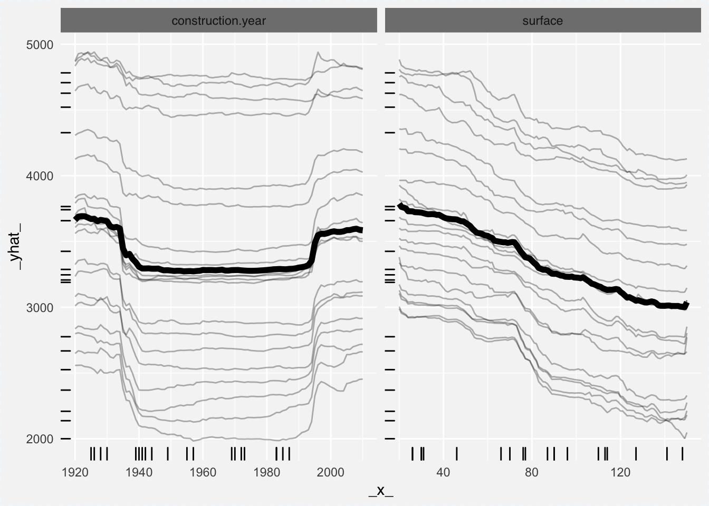

4.4 breakDown

Cheatsheet
The breakDown package (Biecek 2017Biecek, Przemyslaw. 2017. BreakDown: BreakDown Plots. https://CRAN.R-project.org/package=breakDown.) explains components of model prediction for a single observation. Right now it’s working for lm and glm models. Break Down Plots are inspired by waterfall plots as in xgboostExplainer package.
Break Down Plots show the contribution of every variable present in the model.
Let’s see a use case for the wine dataset.
The problem that we are going to solve is to create a model that predicts wine quality and then use the model and explain it’s prediction for a single wine.
We start with a linear Gaussian model for quality with three dependent variables citric.acid, sulphates, alcohol.
## (Intercept) citric.acid sulphates alcohol
## 2.2847360 0.1480342 0.4660404 0.3153252There are just four model coefficients, so it’s easy to write down the formula for model predictions.
\[ \hat y = 2.2847360 + 0.1480342 * citric.acid + 0.4660404 * sulphates + 0.3153252 * alcohol \]
But is it easy to explain prediction for a single observation?
new.wine <- data.frame(citric.acid = 0.35,
sulphates = 0.6,
alcohol = 12.5)
predict(model, newdata = new.wine)## 1
## 6.557737We see, that this wine got higher quality score than the average. But why?
This is where breakDown package is useful. It takes parts of predictions and visualize them. These parts are being calculated by the predict function with type = "terms".
## citric.acid sulphates alcohol
## 1 0.002340197 0.0513358 0.6261516
## attr(,"constant")
## [1] 5.877909Now it’s easy to see that impact of the predicted score have the high alcohol level in this particular wine.
Please note, that these values are NOT calculated as x*beta.
## intercept citric.acid sulphates alcohol
## 1 2.284736 0.05181196 0.2796242 3.941565This is because, when we think about effect of an alcohol we would like to compare this particular wine with wine with average alcohol concentration not wine with zero alcohol.
So, since this particular wine is \(1.985733\) units of alcohol stronger than an average wine
## [1] 1.985733thus the final effect of the alcohol on the wine quality will be
## alcohol
## 0.6261516Same story is true for other variables.
These calculations are easy to do with breakDown package.
## contribution
## alcohol = 12.5 0.626
## sulphates = 0.6 0.051
## citric.acid = 0.35 0.002
## final_prognosis 0.680
## baseline: 5.877909
4.4.1 Model Comparisons
What if we have two or larger number of models? Not a problem for DALEX!
Let’s fit a model with 3 variables.
library("breakDown")
library("DALEX")
new.wine <- data.frame(citric.acid = 0.35,
sulphates = 0.6,
alcohol = 12.5,
pH = 3.36,
residual.sugar = 4.8)
wine_lm_model3 <- lm(quality ~ citric.acid + sulphates + alcohol,
data = wine)
wine_lm_explainer3 <- explain(wine_lm_model3, data = wine, label = "model_3v",
predict_function = stats::predict)
wine_lm_predict3 <- single_prediction(wine_lm_explainer3, observation = new.wine)
plot(wine_lm_predict3)
Let’s fit a second model with 4 variables.
wine_lm_model4 <- lm(quality ~ pH + residual.sugar + sulphates + alcohol,
data = wine)
wine_lm_explainer4 <- explain(wine_lm_model4, data = wine, label = "model_4v",
predict_function = stats::predict)
wine_lm_predict4 <- single_prediction(wine_lm_explainer4, observation = new.wine)
plot(wine_lm_predict4)
It’s easy to compare these models. Just plot both together side by side.

You can do this even for non linear models.
library("randomForest")
wine_rf_model4 <- randomForest(quality ~ pH + residual.sugar + sulphates + alcohol, data = wine)
wine_rf_explainer4 <- explain(wine_rf_model4, data = wine, label = "model_rf")
wine_rf_predict4 <- single_prediction(wine_rf_explainer4, observation = new.wine)
plot(wine_rf_predict4, wine_lm_predict4, wine_lm_predict3)